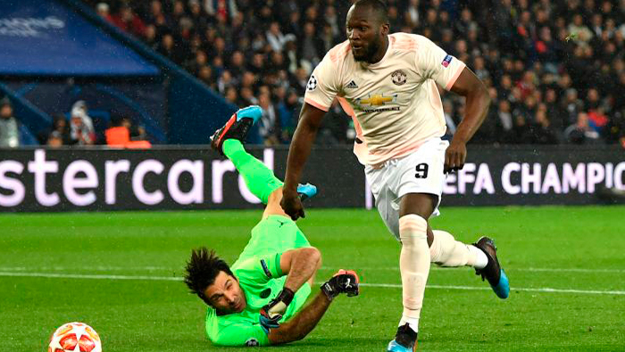

A Tragetória
Gianluigi Buffon começou a sua carreira no Parma, depois de algum tempo, acabou indo para a Juventus, onde se tornou ídolo e ganhou muitos títulos.
O Auge
Gianluigi Buffon viveu grandes momentos na Juventus, conquistou muitos títulos e se tornou o maior goleiro do clube.
Nem tudo são flores
Na Juventus,apesar de viver momentos de glória, também viveu momentos dificéis, foram rebaixados após uma grande descoberta de manipulação de resultados de juizes.
Lealdade
Com o rebaixamento, muitos jogadores lendários deixaram a Juventus, menos Buffon. Ele foi leal ao clube até nos momentos dificéis.
O erro - PSG
Depois de algum tempo, Buffon foi se aventurar na França, no PSG. Buscando a sua primeira Champions, acabou falhando em um jogo importante contra o Manchester United.
Isso acabou com suas chances de um título.
O final Perfeito
Depois de uma aventura curta no PSG, Buffon retorna para encerrar a sua carreira na Juventus com chave de ouro, onde nunca deveria ter saído.
Buffon foi, e sempre será o melhor goleiro da história.